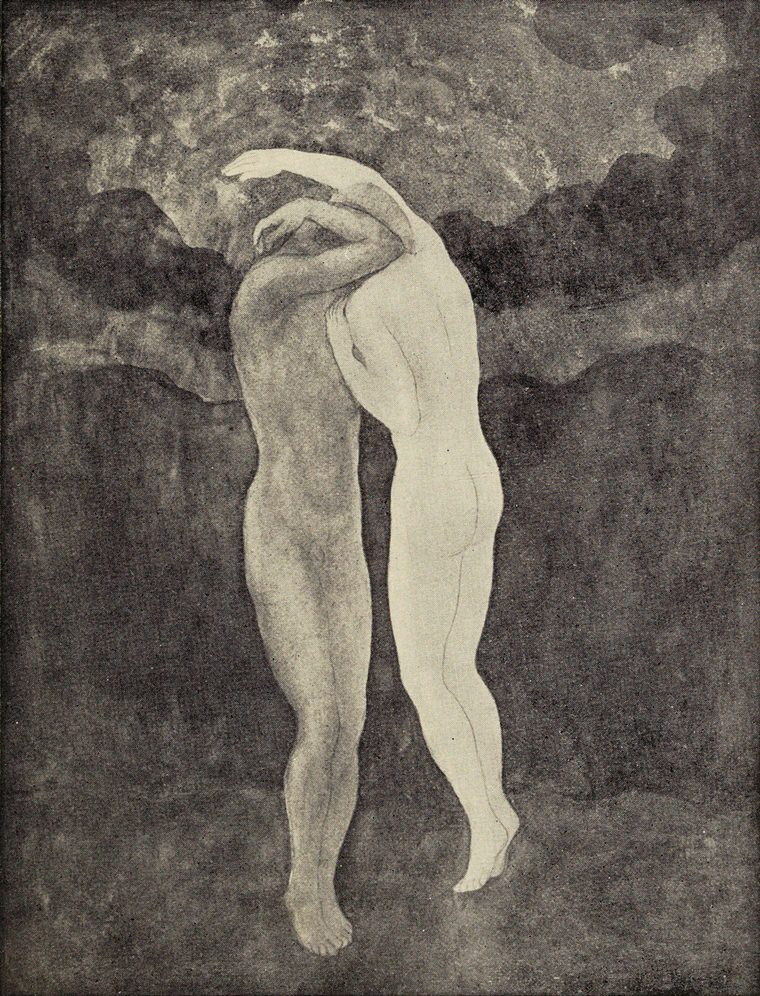

2On Love
Then said Almitra, Speak to us of Love.
And he raised his head and looked upon the people, and there fell a stillness upon them. And with a great voice he said:
When love beckons to you, follow him,
Though his ways are hard and steep.
And when his wings enfold you yield to him,
Though the sword hidden among his pinions may wound you.
And when he speaks to you believe in him,
Though his voice may shatter your dreams as the north wind lays waste the garden.
For even as love crowns you so shall he crucify you. Even as he is for your growth so is he for your pruning.
Even as he ascends to your height and caresses your tenderest branches that quiver in the sun,
So shall he descend to your roots and shake them in their clinging to the earth.
Like sheaves of corn he gathers you unto himself.
He threshes you to make you naked.
He sifts you to free you from your husks.
He grinds you to whiteness.
He kneads you until you are pliant;
And then he assigns you to his sacred fire, that you may become sacred bread for God’s sacred feast.
All these things shall love do unto you that you may know the secrets of your heart, and in that knowledge become a fragment of Life’s heart.
But if in your fear you would seek only love’s peace and love’s pleasure,
Then it is better for you that you cover your nakedness and pass out of love’s threshing-floor,
Into the seasonless world where you shall laugh, but not all of your laughter, and weep, but not all of your tears.
Love gives naught but itself and takes naught but from itself.
Love possesses not nor would it be possessed;
For love is sufficient unto love.
When you love you should not say, “God is in my heart,” but rather, “I am in the heart of God.”
And think not you can direct the course of love, for love, if it finds you worthy, directs your course.
Love has no other desire but to fulfil itself.
But if you love and must needs have desires, let these be your desires:
To melt and be like a running brook that sings its melody to the night. To know the pain of too much tenderness.
To be wounded by your own understanding of love;
And to bleed willingly and joyfully.
To wake at dawn with a winged heart and give thanks for another day of loving;
To rest at the noon hour and meditate love’s ecstacy;
To return home at eventide with gratitude;
And then to sleep with a prayer for the beloved in your heart and a song of praise upon your lips.
